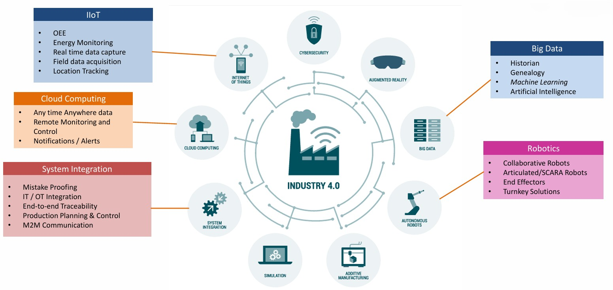

From Sensor to
Smarter Decisions.
TVS Sensing Solutions enables smarter manufacturing with IIoT-driven real-time monitoring, predictive insights and connected operations for higher efficiency, quality and reliability.
Real-time Visibility
Monitor machines, processes and production performance.
Predictive Maintenance
Minimize downtime with AI-driven insights.
Energy Optimization
Drive sustainable and efficient operations.
Quality Assurance
Ensure consistent quality with data-driven control.
The 5-Stage Smart Architecture
Seamless data flow from high-precision physical sensing to autonomous factory floor response.
Sensing
High-bandwidth triaxial vibration sensors, magnetic resolvers, current transducers, and thermal probes capturing sub-micron physical shifts.
Data
Edge computing gateways aggregating raw sensor telemetry with local pre-processing, noise filtering, and ultra-secure fieldbus serialization.
Analytics
Continuous spectral FFT analysis, pattern matching, baseline deviation scoring, and statistical variance calculation running on edge-cloud clusters.
Intelligence
Machine learning models estimating Remaining Useful Life (RUL), pinpointing bearing fault stages, and prescribing proactive maintenance windows.
Automation
Direct closed-loop feedback executing automatic speed derating, line interlocks, ERP spare parts ordering, and robotic rerouting.

Unifying the Physical & Digital Factory.
TVS Sensing Solutions IIoT 4.0 platform bridges legacy industrial machinery and cutting-edge digital enterprise architectures without requiring capital-intensive machine replacements.
Our non-invasive sensor pods and plug-and-play IoT modules enable rapid deployment across CNC spindles, stamping presses, paint shops, injection molders, and automated assembly conveyors.
Industrial Use Cases
Delivering quantifiable ROI through reduced unplanned downtime, optimized energy consumption, and heightened Overall Equipment Effectiveness (OEE).
Predictive Maintenance
Real-time vibration and temperature spectral tracking across high-speed spindle bearings to identify unbalance, misalignment, and lubrication breakdown weeks before catastrophic failure.
Energy Telemetry
Sub-metering electrical current, power factor, and harmonic distortion across manufacturing bays to detect machine idling losses and reduce peak tariff penalties.
Tonnage & Tool Life
Dynamic strain gauge sensing monitoring die impact loads and punch wear to prevent tool breakage, ensure sheet metal precision, and protect press beds.
Deploy Your Industry 4.0
Pilot in
Weeks.
Schedule a demonstration with our IoT systems engineers to configure wireless sensor nodes, edge gateways, and analytics dashboards for your plant.